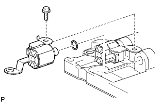
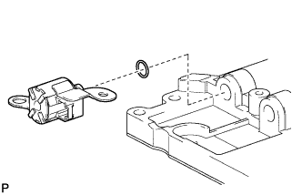
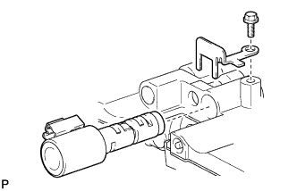
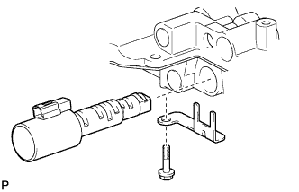

КОРПУС КЛАПАНОВ В СБОРЕ > РАЗБОРКА |
| 1. СНИМИТЕ ЭЛЕКТРОМАГНИТНЫЙ КЛАПАН ПЕРЕКЛЮЧЕНИЯ ПЕРЕДАЧ S2 |
|  |
Выверните болт и снимите электромагнитный клапан переключения передач S2.
Снимите кольцевое уплотнение с электромагнитного клапана переключения передач.
| 2. СНИМИТЕ ЭЛЕКТРОМАГНИТНЫЙ КЛАПАН ПЕРЕКЛЮЧЕНИЯ ПЕРЕДАЧ S1 |
|  |
Снимите электромагнитный клапан переключения передач S1.
Снимите кольцевое уплотнение с электромагнитного клапана переключения передач.
| 3. СНИМИТЕ ЭЛЕКТРОМАГНИТНЫЙ КЛАПАН ПЕРЕКЛЮЧЕНИЯ ПЕРЕДАЧ SLU |
|  |
Выверните болт и снимите стопорную пластину.
Снимите электромагнитный клапан переключения передач SLU.
| 4. СНИМИТЕ ЭЛЕКТРОМАГНИТНЫЙ КЛАПАН ПЕРЕКЛЮЧЕНИЯ ПЕРЕДАЧ SLT |
|  |
Выверните болт и снимите стопорную пластину.
Снимите электромагнитный клапан переключения передач SLT.